Photographs of the N-C-O
Tom Armstrong Collection


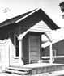 |
Figure 1. FLAG STOP This little building is said to be the flag
stop shelter used at Portola, Calif. along the N-C-O Ry. It is
now located at the Plumas County Fairgrounds in Quincy, Calif. Photo by Tom Armstrong. |
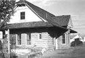 |
Figure 2. ALTURAS PASSENGER STATION This stone station served
Alturas, Calif. It was originally located just north of town, but
after people complained to the California PUC, the railroad was
ordered to have a station closer to the center of town. Instead
of building a new structure, the railroad disassembled this
station stone by stone and rebuilt it. Each stone was numbered,
just like archaeologists number the parts of an ancient temple
before moving it. The roof was moved on flat cars. Some of the
numbers are still visible up under the eves, where the stones are
protected from sun and weather. The station now serves as the
garden club. Photo by Tom Armstrong. |
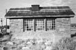 |
Figure 3. PUMP HOUSE When the railroad moved from Reno, Nev. to
Alturas, Calif., the new facilities included this pump house. The
footings for the water tower can be seen in the foreground. Photo by Tom Armstrong. |
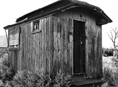 |
Figure 4. REMAINS OF A CAR This short section of a car body
is/was near Doyle, Calif., in use as a shed. It was one of the
cars the N-C-O built in Reno. Its number and usage is unknown,
but it could have been a baggage or mail car. Photo by Tom Armstrong. |
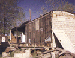 |
Figure 5. END OF THE LINE Many N-C-O cars were later used as
structures in the Alturas area. Two box cars had been built into
a home at this site, and another sat nearby in its original
state. The house was dismantled in the 1980's. Photo by Tom Armstrong. |
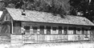 |
Figure 6. WELL-TRAVELED CAR The N-C-O purchased this Kimball car
from the Northwestern Pacific in 1909, and numbered it "8." It
was later used as a restaurant, then set on the ground as a
dwelling, both in Wendel, Calif. Later in was moved to Flint,
Mich., and restored for use on the Huckleberry Railroad. Photo by Tom Armstrong. |
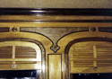 |
Figure 7. RESTORED Passenger car No. 8, as restored at Flint,
Mich., for use on the Huckleberry Railroad. Photo by Tom Armstrong. |
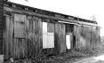 |
Figure 8. ON THE GROUND Many ex-N-C-O car bodies are/were
scattered around the Alturas area. This one came from the
Florence & Cripple Creek, as baggage/mail car No. 71 or 72. It
sits/sat along an alley in Alturas. Photo by Tom Armstrong. |
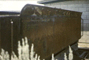 |
Figure 9. TENDER TANK This tender tank saw later service as a
water tank on a ranch south of Alturas. Its lettering and
striping was still visible in the late 1970's. This tank probably
came new with locomotive 4 or 5. Photo by Tom Armstrong. |
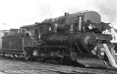 |
Figure 10. AMEDEE SCENE This photo includes several interesting
details. The locomotive is the first No. 8, later renumbered to
6. Note the oil fuel bunker in the tender, the trestle, and the
unusual tank car on the trestle (see figure 11). The N-C-O used
trestles like this in several places to fuel its locos. Rather
than transferring the oil to a stationary tank, the tank car
itself was run up on the trestle and oil flowed by gravity into
the tenders. The same system may have also been used to deliver
drinking water. Photo from the collection of Tom Armstrong. |
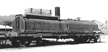 |
Figure 11. FAMILIAR TANK The West Side Lumber Co. acquired this
former-N-C-O Ry. tank (see figure 10) and put it on a new flat
car, numbering it "5." It is/was now at the Big Trees and Roaring
Camp Railroad at Felton, Calif. Photo by Tom Armstrong. |
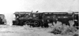 |
Figure 12. RESTORED TO SERVICE Locomotive No. 3 served a useful
life and was set in 1916. However, it was restored to service in
1923 and equipped with a surplus semi-cylindrical ("whale-back")
tender almost longer than the engine! Photo from the collection of Tom Armstrong. |
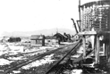 |
Figure 13. END OF THE NARROW GAUGE This scene (looking north)
shows Wendel, Calif. as the narrow gauge track is being removed.
The track to the left went to the wye. Photo from the collection of Tom Armstrong. |
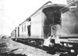 |
Figure 14. PASSENGER TRAIN A typical (but short) N-C-O Ry.
passenger train c. 1900. Photo from the collection of Tom Armstrong. |
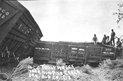 |
Figure 15. STOCK CARS Livestock was an important commodity on the
N-C-O, and the company was innovative in shipping the goods to
market. Car 112 on the left was a typical stock car, of the type
later sent to the Southern Pacific narrow gauge. However, ex-
Florence & Cripple Creek gondola No. 360 was converted from use
for bulk commodities. Note the two kinds of doors, the top-hinged
doors for coal, etc., and the middle regularly-hinged door for
sheep. Photo from the collection of Tom Armstrong. |
 |
Figure 16. BRASS-BOUND BEAUTY Loco. No. 3 stands ready for
service. Photo from the collection of Tom Armstrong. |
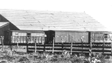 |
Figure 17. FREIGHT CARS The N-C-O Ry. Built most of its own
freight cars. The short stock car on the left is of unknown
origin, but was probably built in Reno. The other two were
definitely built by the railroad after 1900. Note how the box
car and long stock car are of similar proportions. The Southern
Pacific took many of the larger stock cars for their narrow
gauge, but none of the box cars. Photo from the collection of Tom Armstrong. |
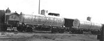 |
Figure 18. TANK CARS Gasoline and oil became important
commodities on the N-C-O. These tanks were owned by Standard Oil
Co., and mounted on railroad-owned flats. This photograph
provided the inspiration for the HO and O scale models introduced
in the 1970's by Classic Miniatures. Photo from the collection of Tom Armstrong. |
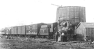 |
Figure 19. MIXED TRAIN A typical mixed train, soon after the
rails reached Alturas in 1908. Photo from the collection of Tom Armstrong. |
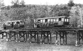 |
Figure 20. SELF-PROPELLED The N-C-O's two Meister & Son rail cars
on one of their first runs. At least one of these cars served to
the end, in 1928. Photo from the collection of Tom Armstrong. |
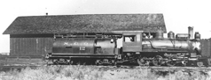 |
Figure 21. SITTING IN THE SUN Locomotive No. 12, probably
photographed at the Western Pacific transfer facility at Doyle,
Calif. Photo from the collection of Tom Armstrong. |
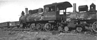 |
Figure 22. DEAD LINE The locomotive deadline out back of the
roundhouse in Alturas. Loco No. 6 never saw service again, but
No. 3 was restored in 1923 and worked to the end of the narrow
gauge era. Photo from the collection of Tom Armstrong. |
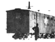 |
Figure 23. CREW CAR This old box car was serving a new life as
maintenance of way car No. 02. Its interior configuration is
unknown, but note the small windows on the right portion of the
car. Were there bunks adjacent to those windows? Photo from the collection of Tom Armstrong. |
 Please note that all of these images are Copyright 2000, Tom Armstrong, and are shown here with permission.
Please note that all of these images are Copyright 2000, Tom Armstrong, and are shown here with permission.
Any use
other than for personal reference must be obtained from Tom - nco.railfan@gmail.com.


©2001 blanchard design,
all rights reserved